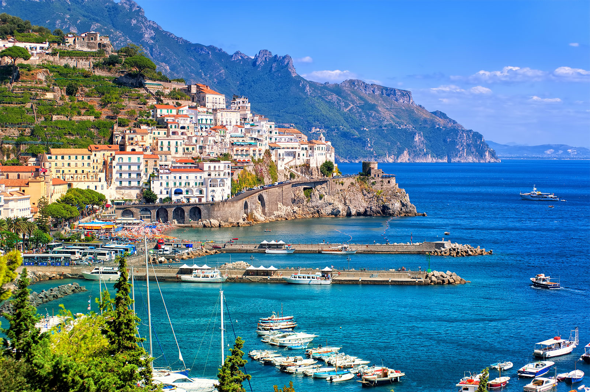

Points of Interest
One of Italy's mountains are the Alps, which is the largest and most extensive mountain in Europe, and is also the youngest mountain range at about 65 million years old.
Both Leonardo da Vinci and Michelangelo Buonarotti are Italians. da Vinci created the Mona Lisa, and Michelangelo made The Statue of David.
Many say how one town is so different from the neighboring town in this country. Italy provides a wide variety of food and culture. Rather than being a whole nation, Italy is more like a country of collected cultural points.
No one actually knows where italy got it's name. Also, it does not have a national fruit, as it has a little bit of everything like fruits and berries.
Most Italians start their day off with coffee and the children drink hot chocolate or hot milk in the mornings. Some put alcohol in their coffee as well.